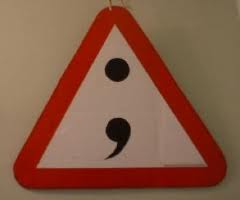
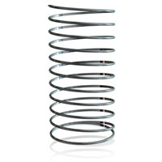

JavaScript: getting your feet wet
NDC 2013 (New Developer Conference)

...with an afternoon of
prototypal inheritance!
Venkat Subramaniam

- Developer at Halliburton, Raytheon and Invensys.
- From 1996 started training and speaking at developer conferences.
Tech used

Ability to run the output as a tooltip


Look at a few of the interesting topics covered
- The use of Use strict
- White space and semicolons
- Hoisting
- Parameters
1. The use of "use strict"

Declaring a variable in global scope is acceptable in JS but not considered best practice.
var foo = function() {
var local1 = 7;
local2 = 8;
console.log(local1);
console.log(local2);
}
foo();
Including "use strict" will cause any variables declared in the global scope to throw an error.
"use strict";
var foo = function() {
var local1 = 7;
local2 = 8; //no var - use strict option will give an error on this line.
console.log(local1);
console.log(local2);
}
foo();
2. White space and semicolons in JavaScript
White space is ignored in JS.
But a semicolon will be added at the end of a stand alone expression even if not intended.
var foo = function(n) {
if(n > 5) {
return n;
} else {
return
n * 2;
}
}
console.log(foo(6)); //Returns 6
Second console log returns.
Because return is a stand alone expression JS inserts a semicolon.
var foo = function(n) {
if(n > 5) {
return n;
} else {
return
n * 2; //JS puts a ; at the end of return.
}
}
console.log(foo(6)); //Returns 6
console.log(foo(2));
3. Hoisting
Behind the scenes, variable declarations are 'hoisted' to the top of the current scope.
If the variable has been initialised then it will be set to undefined when it is 'hoisted'.
var myVariable = "global variable";
var foo = function() {
console.log(myVariable);
}
foo(); //global variable
If we add a local variable below with the same name, it is now undefined.
var myVariable = "global variable";
var foo = function() {
console.log(myVariable);
var myVariable = "local variable";
}
foo(); //undefined
The declaration of myVariable has been 'hoisted' and logs as undefined.
Behind the scenes this has happened ...
var myVariable = "global variable";
var foo = function() {
//var myVariable; - hoisted and undefined.
console.log(myVariable);
/*var*/ myVariable = "local variable"; //myVariable initialised.
}
foo(); //undefined
Function declarations are also 'hoisted' to the top.
myFunction(); //foo
function myFunction() {
console.log("foo");
}
But function expressions are not 'hoisted'.
myFunction(); //Error!
var myFunction = function() {
console.log("foo");
}
Takeaway
Declare all variables at the top of the current scope.
4. Parameters
Passing named parameters to JS functions does what we might expect.
var max = function(a, b) {
if(a > b)
return a;
return b;
}
console.log(max(1, 3)); // 3
console.log(max(4, 2)); // 4
console.log(max(2, 6, 9)); // 6 (9 is ignored... or is it?)
A function can be called with any number of arguments. These are assigned to a pseudo-array in each function called arguments.
Any arguments which are not provided are undefined.
function logArguments() {
for(var i=0; i < arguments.length; i++) {
console.log("This is argument " + arguments[i])
}
}
logArguments("a", "b"); // This is argument a // This is argument b
Because we are able to use length on arguments, we may be tempted to use other array methods. But these won't work.
function argumentsShift() {
var argsArray = arguments.shift(); //Should return first in the array
return argsArray;
}
console.log(argumentsShift("a", "b")); //Error! can't use shift().
But we can create an array using slice() and then join(':').
function argumentsShift() {
var argsArray = [].slice.call(arguments);
argsArray.join(':');
return argsArray.shift();
}
console.log(argumentsShift("a", "b")); // a